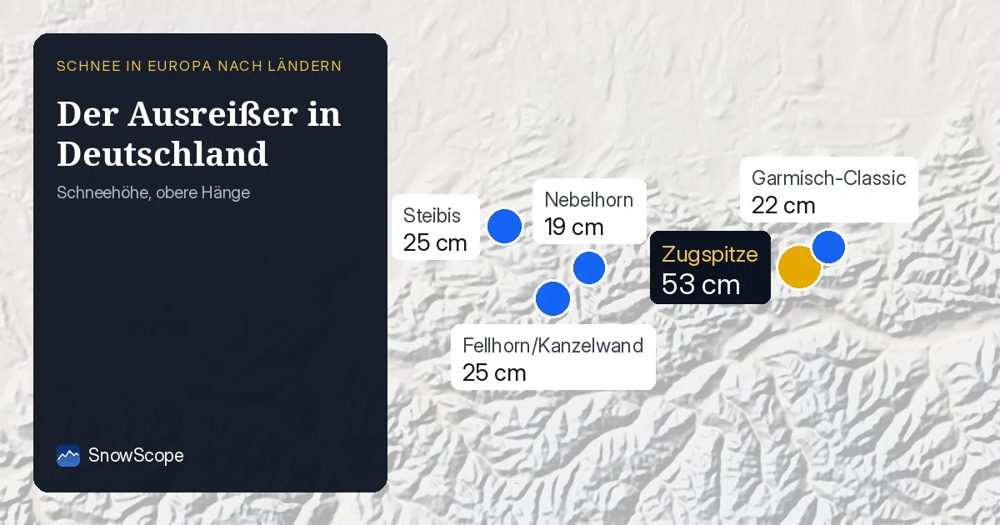
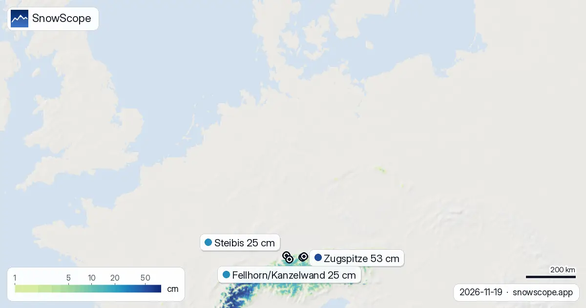

Der Ausreißer in Deutschland: Zugspitze mit 14 cm
Zugspitze hat 14 cm auf den oberen Hängen; das nächste Skigebiet, Steibis, kommt auf 25 cm.
Die Live-Schneeprognose für Zugspitze in der SnowScope-AppSchneehöhen, Pulverschnee-Alarme und 3D-Karte, gratis.
Ein Skigebiet vor dem Rest
Ein solcher Abstand kommt meist von der Höhe und davon, von welcher Seite der Schnee kam. Es ist der eine Ort in Deutschland, der diese Woche eine lange Anfahrt lohnt.
In Deutschland sind heute rund 1.820 km² Bergland weiß, kaum anders als gestern. Etwa 4 % der kartierten Berge und Hügel des Landes sind bedeckt.
| Skigebiet | Schneehöhe | Neuschnee, 72 h | Erwartet, nächste Tage | Gipfel |
|---|---|---|---|---|
| Zugspitze | 53 cm | 17 cm | 29 cm | 2.627 m |
| Steibis | 25 cm | 21 cm | 40 cm | 1.704 m |
| Fellhorn/Kanzelwand | 25 cm | 20 cm | 42 cm | 1.965 m |
| Garmisch-Classic | 22 cm | 12 cm | 22 cm | 2.047 m |
| Nebelhorn | 19 cm | 20 cm | 42 cm | 2.213 m |

Die besten Skigebiete im Moment
An der Spitze steht Zugspitze mit 53 cm.
Danach: Steibis (25 cm), Fellhorn/Kanzelwand (25 cm), Garmisch-Classic (22 cm) und Nebelhorn (19 cm).
Zugspitze bekam in drei Tagen 17 cm und könnte bis Sonntag, 22. November weitere 29 cm dazubekommen.
In Steibis: 21 cm Neuschnee in drei Tagen, bis Sonntag, 22. November werden 40 cm mehr erwartet.
51 der 231 beobachteten Skigebiete in Deutschland haben oben Schnee.
Der Rest der Auswahl: Fellhorn/Kanzelwand: 25 cm oben, 20 cm in drei Tagen, 42 cm erwartet; Garmisch-Classic: 22 cm oben, 12 cm in drei Tagen, 22 cm erwartet; Nebelhorn: 19 cm oben, 20 cm in drei Tagen, 42 cm erwartet.

Wie dieser Start abschneidet
So stehen die schneereichsten Skigebiete im Vergleich zu ihrem üblichen 19. November da: Zugspitze: 14 cm auf etwa 1.811 m, gegenüber 20 cm in einem normalen Jahr; Steibis: 1 cm auf etwa 1.282 m, gegenüber 9 cm in einem normalen Jahr; Fellhorn/Kanzelwand: 6 cm auf etwa 1.442 m, gegenüber 10 cm in einem normalen Jahr; Garmisch-Classic: 5 cm auf etwa 1.387 m, gegenüber 9 cm in einem normalen Jahr.
0 dieser 4 Skigebiete liegen über ihrer üblichen Höhe für dieses Datum.
Diese Höhen gelten für eine bestimmte Höhenlage jedes Bergs unterhalb des Gipfels und sind daher niedriger als die Werte der oberen Hänge weiter unten.
In früheren Wintern kam der beste Schnee in Zugspitze meist Anfang März / Ende März.
Kommt Schnee?
Die kommende Woche könnte bis zu 38 cm bringen, davon 23 cm in den nächsten drei Tagen.
Der Sonntag, 22. November sticht heraus, mit bis zu 14 cm an einem Tag.
Die zweite Woche bringt bis zu 10 cm dort, wo es am meisten schneit.
Schneehöhe nach Höhenlage
Nach Höhe ergibt sich folgendes Bild: 1.000-1.500 m: im Mittel 1 cm (38 % des Bodens weiß); 1.500-2.000 m: im Mittel 6 cm (100 % des Bodens weiß); 2.000-2.500 m: im Mittel 16 cm (100 % des Bodens weiß).
Die Woche in Zahlen
Tag für Tag entwickelte sich die weiße Fläche in Deutschland: 16. November 2.110 km²; 17. November 1.470 km²; 18. November 1.510 km²; 19. November 1.820 km².
Zugspitze war diese Woche jeden Tag das schneereichste Skigebiet.
Wie viel des Landes weiß ist
Vor einer Woche waren es 1.630 km²; die Schneedecke hat um 190 km² zugelegt. Für eine weiße Landschaft: ab 1.300 m aufwärts.
Die letzten Schneefälle
Die Allgäuer Alpen, die Bayerischen Alpen und der Schwarzwald bekamen in drei Tagen den meisten Neuschnee, bis zu 6 cm.
Allein die letzten 24 Stunden brachten bis zu 3 cm.
Rund 590 km² bekamen mindestens 5 cm.
Die Nachbarn heute
Zum Vergleich die Nachbarn am selben Tag: Österreich: 48 % weiß, vorn Stubaier Gletscher mit 60 cm, bis zu 55 cm in der kommenden Woche; Schweiz: 59 % weiß, vorn Glacier 3000 mit 58 cm, bis zu 125 cm in der kommenden Woche.
Einen Skitag planen
Über 1.500 m ist der Boden fast ganz weiß (100 % bedeckt), die Pisten dort haben eine durchgehende Unterlage.
Zwischen 1.000 m und 1.500 m ist die Decke lückenhaft, rund 38 % weiß: Gras und Steine zwischen dem Schnee.
Unterhalb von 1.000 m sind die Hänge noch fast schneefrei.
Wer den Tag wählen kann, fährt nach dem Sonntag, 22. November: Dann kann sich der Neuschnee setzen und die Straßen sind geräumt.
Vor Ort
Jeder Tag bringt mehr weißen Boden, ein gutes Zeichen für Skigebiete mit Naturschnee.
Die Vorhersage im Blick behalten: Der kommende Schnee kann das Bild schnell ändern.
Tipps für Skifahrer
- Über der Waldgrenze kann der Schnee verfrachtet sein: Grate im Blick behalten.
- Vor dem Gelände abseits der Piste den lokalen Lawinenbericht lesen.
- Früher Schnee ist über Steinen dünn: zuerst auf präparierten Pisten bleiben.
Zu diesen Zahlen
Die Schneehöhen der Skigebiete sind der meiste Schnee in den oberen Hängen laut SnowScope-Schneemodell (etwa 1 km, Lauf vom 19. November); es sind Schätzungen für eine Fläche, keine Messung an einem Punkt. Werte von Messstationen sind Messungen am angegebenen Tag. Prognosen können sich ändern. Lies vor dem Freeriden immer den offiziellen Lawinenlagebericht.
Diesen Bericht zitieren
Für Forschung, Lehre oder Presse: Zahlen und Grafiken sind unter CC BY 4.0 mit dieser Quellenangabe frei nutzbar.
SnowScope (2026), Der Ausreißer in Deutschland: Zugspitze mit 14 cm, https://snowscope.app/blog/de/2026/11/germany-standout-resort-19-november-2026.html, abgerufen am 2026-11-19
SnowScope (Atlas Labs). (2026, November 19). Der Ausreißer in Deutschland: Zugspitze mit 14 cm. SnowScope snow reports. https://snowscope.app/blog/de/2026/11/germany-standout-resort-19-november-2026.html
BibTeX
@misc{snowscope2026germanystandoutresort19n,
author = {{SnowScope (Atlas Labs)}},
title = {Der Ausreißer in Deutschland: Zugspitze mit 14 cm},
year = {2026},
month = nov,
howpublished = {\url{https://snowscope.app/blog/de/2026/11/germany-standout-resort-19-november-2026.html}},
note = {Published 2026-11-19 11:53 UTC; accessed 2026-11-19}
}· CC BY 4.0 · Methoden, Daten und Werkzeuge →
Zugspitze: Schnee und Temperatur nach Höhe, dieser Winter vs letzter (Werkzeuge) →
Zugspitze folgen
Gratis: eine Nachricht, wenn Neuschnee kommt, und jeden Morgen die Vorhersage.